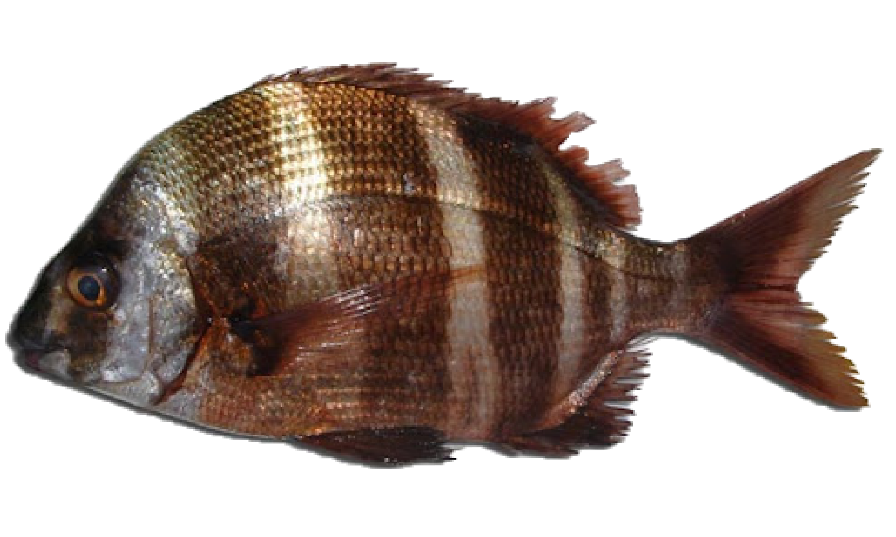

Sargo imperial
| Cuando | Otoño |
|---|---|
| Lugar | Fondos rocosos, aguas turbias de color oscuro y agitadas. |
| Cebo | Gusanos, camarones, crustáceos y moluscos |
| Técnica | Surfcasting |
Diplodus cervinus cervinus es una especie de peces de la familia Sparidae en el orden de los Perciformes.Los machos pueden llegar alcanzar los 55 cm de longitud total.Se encuentra en las costas del Atlántico oriental (desde el mar Cantábrico y el Mediterráneo hasta Sudáfrica, incluyendo el Archipiélago de Madeira e Islas Canarias ). Perteneciente a la familia de los esparidos, el sargo breado es conocido también con los nombres vulgares de sargo bedao, imperial o real, y cuyas denominaciones científicas son Diplodus cervinus, Sargus trifasciatus, Diplodus trifasciatus. Sus características morfológicas se asemejan a sus familiares mas cercanos como son el sargo común, poseyendo un cuerpo ovalado y comprimido, y distinguiéndolos sus bandas color chocolate sobre un fondo dorado, ademas de poseer una boca con grandes labios carnosos, armada de grandes incisivos y pequeños molares.